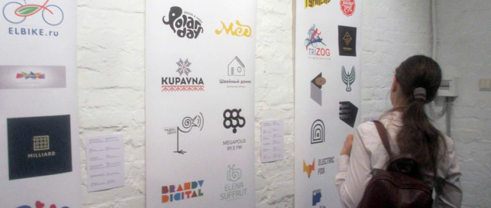
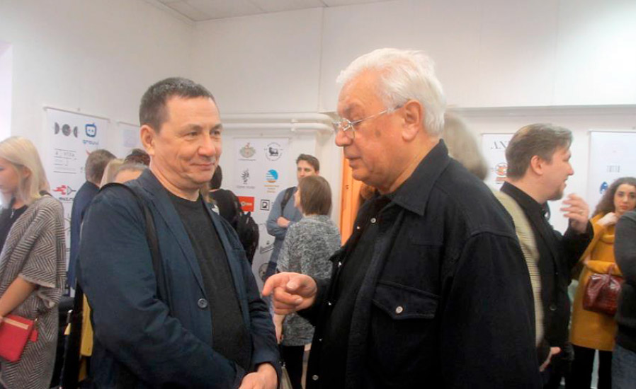
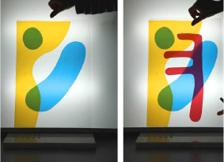
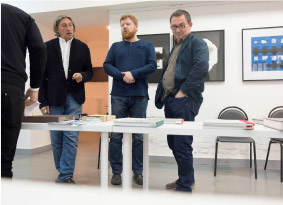

<!doctype html>
<html class="no-js" lang="ru">
  <head>
  	<meta charset="utf-8">
  	<meta http-equiv="x-ua-compatible" content="ie=edge">
  	<title>Template</title>
  	<meta name="viewport" content="width=device-width, initial-scale=1">
  	<meta name="format-detection" content="telephone=no">
  	<meta name="theme-color" content="#fff">
  	<link rel="stylesheet" media="all" href="lib/font-awesome/css/font-awesome.min.css" >
  	<link rel="stylesheet" media="all" href="lib/ion.rangeSlider-2.1.2/css/ion.rangeSlider.css" >
  	<link rel="stylesheet" media="all" href="lib/ion.rangeSlider-2.1.2/css/ion.rangeSlider.skinNice.css" >
  	<link rel="stylesheet" media="all" href="lib/color/spectrum.css" >
  	<link rel="stylesheet" media="all" href="css/style.css" >
  	<script src="//cdnjs.cloudflare.com/ajax/libs/modernizr/2.8.3/modernizr.js"></script>
  </head>
  <body>
    <!-- BEGIN  out-->
    <div class="out out_main">
    	<div class="navbar navbar_position_fixed">
        <!-- BEGIN  navbar__brand-->
        <header class="navbar__brand" role="banner">
          <a class="brand-logo" href="#" title="Home">
            
          </a>

          <div class="navbar-open">
            <button class="btn-open-menu" data-target="#menu">
              <span class="btn-open-menu__el btn-open-menu__el_1"></span>
              <span class="btn-open-menu__el btn-open-menu__el_2"></span>
              <span class="btn-open-menu__el btn-open-menu__el_3"></span>
            </button>
          </div>
        </header>
        <!-- END  navbar__brand-->
        
        <!-- BEGIN  navbar__body-->
         <div id="menu" class="navbar-body">
          <div class="navbar__menu" role="navigation">
            <!-- BEGIN  nav-->
            <nav class="nav" role="navigation" aria-label="All Fonts">
              <h3 class="nav__title">
                <a class="link link__nav-title" href="#">All Fonts:</a>
              </h3>
        
              <div class="nav__list">
                <ul class="navigation-list">
                  <li class="navigation-list__item ">
                    <a class="link link_nav link_nav_active" href="#">Bank Gothic™</a>
                  </li>
                  <li class="navigation-list__item">
                    <a class="link link_nav" href="#">FreeSet</a>
                  </li>
                  <li class="navigation-list__item">
                    <a class="link link_nav" href="#">Baskervill Gothic 725</a>
                  </li>
                  <li class="navigation-list__item">
                    <a class="link link_nav" href="#">Kremlin Pro</a>
                  </li>
                  <li class="navigation-list__item">
                    <a class="link link_nav" href="#">Rodchenko</a>
                  </li>
                  <li class="navigation-list__item">
                    <a class="link link_nav" href="#">Black Grotesk</a>
                  </li>
                  <li class="navigation-list__item">
                    <a class="link link_nav" href="#">DIN Condensed</a>
                  </li>
                  <li class="navigation-list__item">
                    <a class="link link_nav" href="#">Serp and Molot</a>
                  </li>
                </ul>
              </div>
            </nav>
            <!-- END  nav--> 
        
            <!-- BEGIN  nav-->
            <nav class="nav" role="navigation" aria-label="Blog">
              <h3 class="nav__title">
                <a class="link link__nav-title">Blog:</a>
              </h3>
        
              <div class="nav__list">
                <ul class="navigation-list">
                  <li class="navigation-list__item">
                    <a class="link link_nav" href="#">Russia Design. What is it?</a>
                  </li>
                  <li class="navigation-list__item">
                    <a class="link link_nav" href="#">New relus of typography.</a>
                  </li>
                  <li class="navigation-list__item">
                    <a class="link link_nav" href="#">Gold Book. Real story about type.</a>
                  </li>
                </ul>
              </div>
            </nav>
            <!-- END  nav-->         
          </div>
          <!-- END  navbar__menu--> 
          
          <!-- BEGIN  navbar__social-->
          <div class="navbar__social">
            <a href="#" class="link_social">
              <span class="fa fa-facebook-square"></span>
            </a>
        
            <a href="#" class="link_social">
              <span class="fa fa-instagram"></span>
            </a>
        
            <a href="#" class="link_social">
              <span class="fa fa-google-plus-square"></span>
            </a>
        
            <a href="#" class="link_social">
              <span class="fa fa-pinterest-square"></span>
            </a>
        
            <a href="#" class="link_social">
              <span class="fa fa-twitter-square"></span>
            </a>
          </div>
          <!-- END  navbar__social--> 
          
          <!-- BEGIN  navbar__tags--> 
          <div class="navbar__tags">
            <div class="tag">     
              <a href="#" class="tag__font-name">serif</a>    
              <a href="#" class="tag__font-name">sans</a>    
              <a href="#" class="tag__font-name">text</a> 
              <a href="#" class="tag__font-name">display</a>   
              <a href="#" class="tag__font-name">headline</a>
              <a href="#" class="tag__font-name">script</a>    
              <a href="#" class="tag__font-name">magazine</a>   
              <a href="#" class="tag__font-name">elegant</a>  
              <a href="#" class="tag__font-name tag__font-name_active">geometric</a>
              <a href="#" class="tag__font-name">poster</a>   
              <a href="#" class="tag__font-name">modern</a>   
              <a href="#" class="tag__font-name">clean</a>   
              <a href="#" class="tag__font-name">book</a>  
            </div>
          </div>
          <!-- END  navbar__tags--> 
          
          <!-- BEGIN  navbar__switcher--> 
          <div class="navbar__switcher">
            <ul class="lang-switcher">
              <li class="lang-switcher__name"><a class="lang-switcher__btn lang-switcher__btn_active" href="">Eng</a></li>
              <li class="lang-switcher__name"><a class="lang-switcher__btn" href="">Рус</a></li>
            </ul>
          </div>
          <!-- END  navbar__switcher--> 
          
          <!-- BEGIN  navbar__copy-->
          <footer class="navbar__copy" role="contentinfo">
            <p class="copyright">
              &copy; Tagir Safaev 2015 <br>
              Made with love
            </p>
          </footer>
          <!-- END  navbar__copy--> 
        </div>
        <!-- END  navbar__body-->
      </div>

      <main class="main main_height_full" role="main">
        <figure class="blog-page__image">
          
        </figure>
        <div class="blog-page">
          <div class="blog-page__block">
            <div class="blog-page__right">
              <h1 class="blog-page__title">Берите на себя задачи, которые немного превышают ваш уровень квалификации</h1>
            </div>
          </div>

          <div class="blog-page__block">
            <div class="blog-page__right">
              <p>На продуктивность влияют не только отвлекающие уведомления или, например, хорошая погода, но и то, есть рабочий настрой или нет. Если вам приходилось проводить перед дедлайном бессонные ночи, то вы наверняка задумывались, почему периоды бездействия могут растянуться на целые дни или недели и почему погрузиться в работу сложно, даже если вы занимаетесь чем-то интересным</p>
            </div>
          </div>


          <div class="blog-page__block">
            <div class="blog-page__left">
              <h3 class="blog-page__pre-title">ЧТо я хочу сказать</h3>
            </div>
            <div class="blog-page__right">
              <p>Бенгт Яррехулт, адъюнкт-профессор Технического университета Чалмерса в Швеции, считает, что дело в недостаточной внутренней мотивации. Он изучил работы психолога Михая Чиксентмихайи (например, Creativity: Flow and the Psychology of Discovery and Invention) и книгу Creativity Unlimited профессора Стокгольмской школы экономики Микаэля Далена и по итогам составил график ниже. Из него следует, что на рабочий настрой влияют два ключевых фактора: сложность задания и набор навыков</p>
            </div>
          </div>
       
          <figure class="blog-page__image">
            
            <figcaption>Бенгт Яррехулт, адъюнкт-профессор Технического университета Чалмерса в Швеции, считает</figcaption>
          </figure>

          <div class="blog-page__block">
            <div class="blog-page__left">
              <h3 class="blog-page__pre-title">ЧТо я хочу сказать</h3>
            </div>
            <div class="blog-page__right">
              <p>На продуктивность влияют не только отвлекающие уведомления или, например, хорошая погода, но и то, есть рабочий настрой или нет. Если вам приходилось проводить перед дедлайном бессонные ночи, то вы наверняка задумывались, почему периоды бездействия могут растянуться на целые дни или недели и почему погрузиться в работу сложно, даже если вы занимаетесь чем-то интересным.</p>

              <p>Бенгт Яррехулт, адъюнкт-профессор Технического университета Чалмерса в Швеции, считает, что дело в недостаточной внутренней мотивации. Он изучил работы психолога Михая Чиксентмихайи (например, Creativity: Flow and the Psychology of Discovery and Invention) и книгу Creativity Unlimited профессора Стокгольмской школы экономики Микаэля Далена и по итогам составил график ниже. Из него следует, что на рабочий настрой влияют два ключевых фактора: сложность задания и набор навыков</p>
              <div class="blockquote-separator blockquote-separator_inverse"></div>
            </div>
          </div>

          

          <div class="blog-page__block blog-page__quote">
            <div class="blog-page__left">
              <div class="blockquote-author">
                <div class="blockquote-author__photo">
                  
                </div>

                <p class="blockquote-author__name">Тагир Сафаев</p>
                <p class="blockquote-author__proffesion">Шрифтовой дизайнер</p>
              </div>
            </div>

            <div class="blog-page__right">
              
              <blockquote class="blockquote">На продуктивность влияют не только отвлекающие уведомления или, например, хорошая погода, но и то, есть рабочий настрой или нет. Если вам приходилось проводить перед дедлайном бессонные ночи, то вы наверняка задумывались, почему периоды бездействия могут растянуться на целые дни или недели и почему погрузиться в работу сложно, даже если вы занимаетесь чем-то интересным.</blockquote>     
              <div class="blockquote-separator"></div>         
            </div>
          </div>

          

          <div class="blog-page__block">
            <div class="blog-page__right">
            <p>На продуктивность влияют не только отвлекающие уведомления или, например, хорошая погода, но и то, есть рабочий настрой или нет. Если вам приходилось проводить перед дедлайном бессонные ночи, то вы наверняка задумывались, почему периоды бездействия могут растянуться на целые дни или недели и почему погрузиться в работу сложно, даже если вы занимаетесь чем-то интересным.</p>

            <p>Бенгт Яррехулт, адъюнкт-профессор Технического университета Чалмерса в Швеции, считает, что дело в недостаточной внутренней мотивации. Он изучил работы психолога Михая Чиксентмихайи (например, Creativity: Flow and the Psychology of Discovery and Invention) и книгу Creativity Unlimited профессора Стокгольмской школы экономики Микаэля Далена и по итогам составил график ниже. Из него следует, что на рабочий настрой влияют два ключевых фактора: сложность задания и набор навыков</p>
            </div>
          </div>
        </div>
        

        <div class="social-block">
          <button class="btn-share facebook-like"></button>
          <button class="btn-share facebook-share"></button>
          <button class="btn-share vk-share"></button>
          <button class="btn-share tweet"></button>
        </div>


        <section class="other-blog">
          <h2 class="other-blog__title">ДРУГИЕ материалы блога</h2>
          <div class="other-blog__inner">
            <div class="other-blog__item">
              <artical class="blog-artical">
                <div class="blog-artical__image">
                  <a href="#" title="Серебро набора 2015. Лекционная часть, день первый">
                    
                  </a>
                </div>

                <div class="blog-artical__info">
                  <div class="blog-artical__title">
                    <h1 class="artical-title"><a class="link link_blog-title" href="#">Серебро набора 2015. Лекционная часть, день первый</a></h1>
                  </div>
                  
                  <div class="blog-artical__detail">
                    <span class="create-date"><span class="fa fa-clock-o"></span> 14 March 2016</span>
                    <span class="comment-count"><span class="fa fa-comment-o"></span> 84</span>
                  </div>

                  <div class="blog-artical__text">
                    <p>Всё донельзя просто, но последствия непредсказуемо феерические, в хорошем смысле разумеется.)) всё донельзя просто, но последствия непредсказуемо феерические, в хорошем смысле </p>
                  </div>
                </div>
              </artical>             
            </div>
            
            <div class="other-blog__item">
              <artical class="blog-artical">
                <div class="blog-artical__image">
                  <a href="#" title="Начали заниматься слоями!">
                    
                  </a>
                </div>

                <div class="blog-artical__info">
                  <div class="blog-artical__title">
                    <h1 class="artical-title"><a class="link link_blog-title" href="#">Начали заниматься слоями!</a></h1>
                  </div>
                  
                  <div class="blog-artical__detail">
                    <span class="create-date"><span class="fa fa-clock-o"></span> 14 March 2016</span>
                    <span class="comment-count"><span class="fa fa-comment-o"></span> 84</span>
                  </div>

                  <div class="blog-artical__text">
                    <p>Всё донельзя просто, но последствия непредсказуемо феерические, в хорошем смысле разумеется.)) всё донельзя  </p>
                  </div>
                </div>
              </artical>
            </div>
            
            <div class="other-blog__item">
              <artical class="blog-artical">
                <div class="blog-artical__image">
                  <a href="#"></a>
                </div>

                <div class="blog-artical__info">
                  <div class="blog-artical__title">
                    <h1 class="artical-title"><a class="link link_blog-title" href="#">День перед фестивалем «Длинные руки 12» — «Жар-книга»</a></h1>
                  </div>
                  
                  <div class="blog-artical__detail">
                    <span class="create-date"><span class="fa fa-clock-o"></span> 14 March 2016</span>
                    <span class="comment-count"><span class="fa fa-comment-o"></span> 84</span>
                  </div>

                  <div class="blog-artical__text">
                    <p>Всё донельзя просто, но последствия непредсказуемо феерические, в хорошем смысле разумеется.)) всё донельзя  </p>
                  </div>
                </div>
              </artical>
            </div>
          </div>
        </section>
      </main>
    </div>
    <!-- END out-->
    <script src="js/app.js"></script>
  </body>
</html>